한국사능력검정시험-심화 (2024-02-17 기출문제)
1과목: 과목 구분 없음
1. (가) 시대의 생활 모습으로 가장 적절한 것은? [1점]
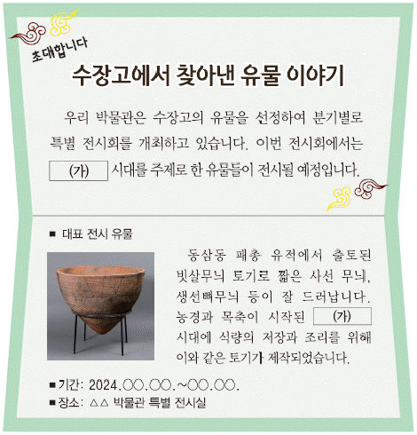
- 반달 돌칼을 이용하여 벼를 수확하였다.
- 주로 동굴이나 강가의 막집에 거주하였다.
- 가락바퀴와 뼈바늘로 옷을 만들어 입었다.
- 많은 인력을 동원하여 고인돌을 축조하였다.
- 주먹도끼, 찍개 등의 뗀석기를 처음 제작하였다.
(정답률: 86%)
2. 밑줄 그은 '이 왕'의 업적으로 옳은 것은? [2점]
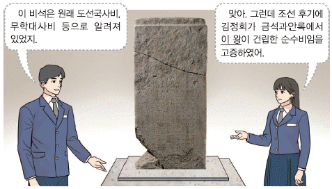
- 관료전을 지급하고 녹읍을 폐지하였다.
- 인재 등용을 위해 독서삼품과를 실시하였다.
- 이차돈의 순교를 계기로 불교를 공인하였다.
- 지방관을 감찰하기 위해 외사정을 파견하였다.
- 대아찬 거칠부에게 명하여 국사를 편찬하였다.
(정답률: 67%)
3. (가), (나) 나라에 대한 설명으로 옳은 것을 ＜보기＞에서 고른 것은? [3점]
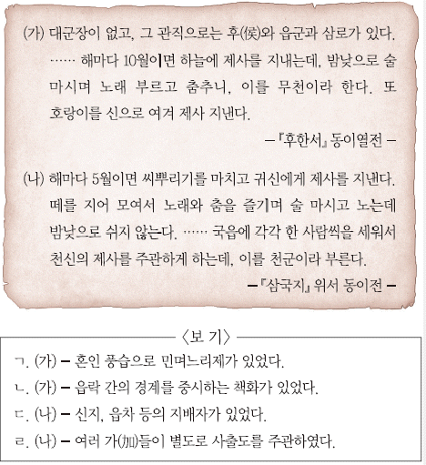
- ㄱ, ㄴ
- ㄱ, ㄷ
- ㄴ, ㄷ
- ㄴ, ㄹ
- ㄷ, ㄹ
(정답률: 75%)

4. (가)에 들어갈 내용으로 적절한 것은? [2점]
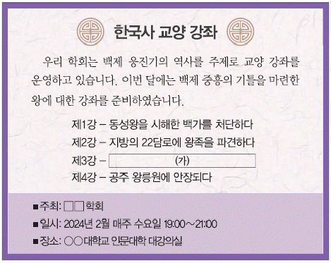
- 금마저에 미륵사를 창건하다
- 윤충을 보내 대야성을 함락하다
- 평양성을 공격하여 고국원왕을 전사시키다
- 진흥왕과 연합하여 한강 하류 지역을 수복하다
- 사신을 보내 중국 남조의 양과 외교 관계를 강화하다
(정답률: 61%)
5. (가), (나) 사이의 시기에 있었던 사실로 옳은 것은? [2점]
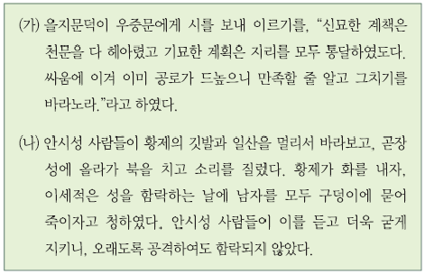
- 관구검이 환도성을 공격하여 함락하였다.
- 계백이 이끄는 군대가 황산벌에서 항전하였다.
- 연개소문이 정변을 일으켜 권력을 장악하였다.
- 광개토 대왕이 신라에 침입한 왜를 격퇴하였다.
- 미천왕이 낙랑군을 축축하여 영토를 확장하였다.
(정답률: 80%)
6. 다음 설명에 해당하는 문화유산으로 옳은 것은? [2점]
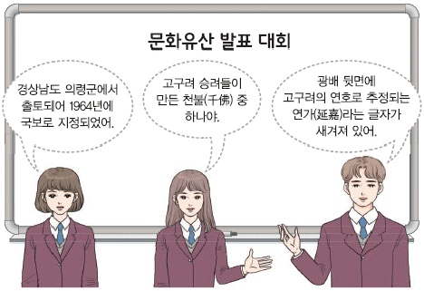
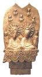
(정답률: 82%)
7. (가)~(다)를 일어난 순서대로 옳게 나열한 것은? [3점]
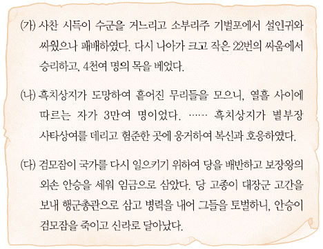
- (가)-(나)-(다)
- (가)-(다)-(나)
- (나)-(가)-(다)
- (나)-(다)-(가)
- (다)-(나)-(가)
(정답률: 63%)
8. (가) 국가의 경제 상황으로 옳은 것은? [2점]
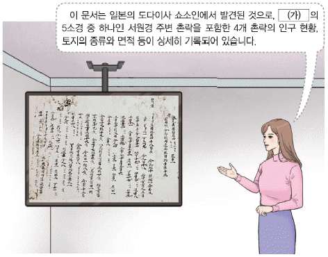
- 경성과 경원에 무역소를 두었다.
- 수도에 서시와 남시를 설치하였다.
- 주전도감에서 해동통보를 발행하였다.
- 독점적 도매상인인 도고가 출현하였다.
- 감자, 고구마 등을 구황 작물로 재배하였다.
(정답률: 57%)
9. (가) 국가에 대한 설명으로 옳은 것은? [2점]
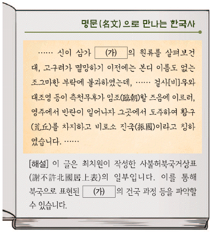
- 정사암 회의에서 나라의 중대사를 결정하였다.
- 지방의 여러 성에 욕살, 처려근지 등을 두었다.
- 도병마사에서 변경의 군사 문제 등을 논의하였다.
- 서적 관리, 주요 문서 작성 등을 위해 문적원을 두었다.
- 골품에 따라 관등 승진, 일상생활 등을 엄격히 제한하였다.
(정답률: 57%)
10. (가) 왕에 대한 설명으로 옳은 것은? [1점]
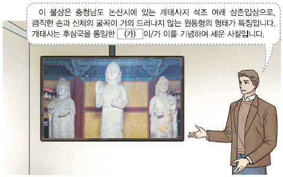
- 관학 진흥을 위해 양현고를 설치하였다.
- 쌍기의 건의를 받아들여 과거제를 시행하였다.
- 전국에 12목을 설치하고 지방관을 파견하였다.
- 전시과 제도를 처음 마련하여 관리에게 토지를 지급하였다.
- 후대 왕들이 지켜야 할 정책 방향을 담은 훈요 10조를 남겼다.
(정답률: 75%)
11. 다음 검색창에 들어갈 지역에서 있었던 사실로 옳은 것은? [3점]
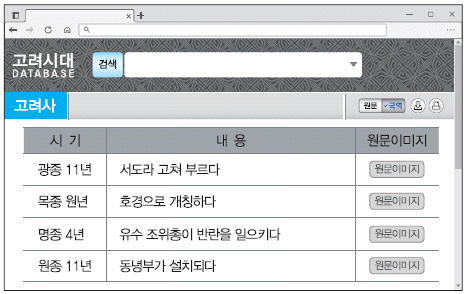
- 정몽주가 이방원 세력에게 피살되었다.
- 묘청이 반란을 일으키고 국호를 대위라 하였다.
- 몽골의 침략으로 황룡사 구층 목탑이 소실되었다.
- 흥덕사에서 금속 활자로 직지심체요절이 간행되었다.
- 정사가 유배 중에 정과정이라는 고려 가요를 지었다.
(정답률: 64%)
12. 다음 자료에 나타난 국가의 경제 상황으로 옳은 것은? [2점]
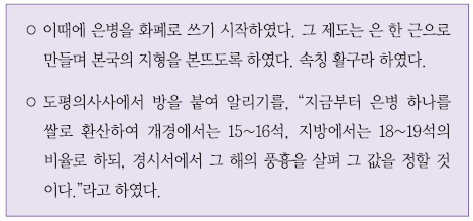
- 솔빈부의 말을 특산물로 수출하였다.
- 서적점, 다점 등의 관영 상점을 운영하였다.
- 청해진을 중심으로 해상 무역을 전개하였다.
- 광산을 전문적으로 경영하는 덕대가 활동하였다.
- 기유약조를 체결하여 일본과의 교역을 재개하였다.
(정답률: 59%)
13. (가)에 대한 고려의 대응으로 옳은 것은? [2점]
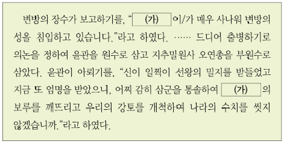
- 광군을 창설하여 침입에 대비하였다.
- 박위를 파견하여 근거지를 토벌하였다.
- 강화도로 도읍을 옮겨 장기 항전을 준비하였다.
- 선물 받은 낙타를 만부교에서 굶어 죽게 하였다.
- 동북 9성을 설치하고 경계를 알리는 비석을 세웠다.
(정답률: 66%)
14. 다음 자료를 활용한 탐구 활동으로 가장 적절한 것은? [1점]
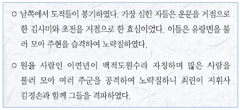
- 노비안검법이 실시된 목적을 알아본다.
- 삼정이정청이 설치된 과정을 살펴본다.
- 사심관 제도가 시행된 사례를 조사한다.
- 집강소에서 추진한 개혁의 내용을 분석한다.
- 무신 집권기 하층민의 반란이 발생한 배경을 파악한다.
(정답률: 75%)
15. 다음 사건이 일어난 시기를 연표에서 옳게 고른 것은? [2점]
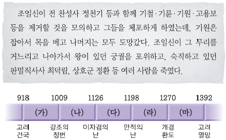
- (가)
- (나)
- (다)
- (라)
- (마)
(정답률: 43%)
16. 밑줄 그은 '국가'의 문화유산으로 옳지 않은 것은? [2점]
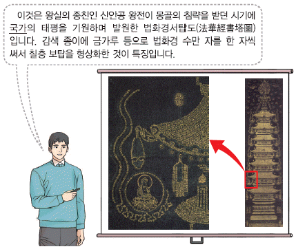
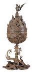
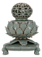
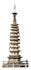
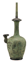
(정답률: 63%)
17. (가), (나) 사이의 시기에 있었던 사실로 옳은 것은? [3점]
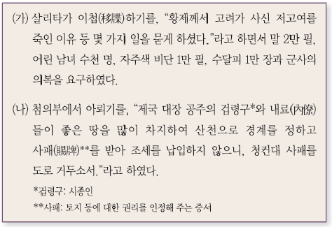
- 신승겸이 공산 전투에서 전사하였다.
- 최승로가 왕에게 시무 28조를 올렸다.
- 김방경이 군대가 탐라에서 삼별초를 진압하였다.
- 강감찬이 개경에 나성을 축조할 것을 건의하였다.
- 경대승이 정중부 등을 제거하고 권력을 장악하였다.
(정답률: 59%)
18. (가) 인물의 활동으로 옳은 것은? [2점]
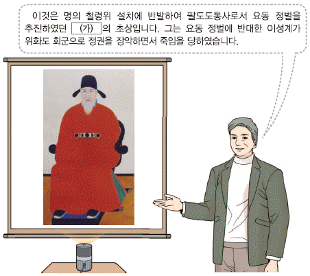
- 홍산 전투에서 왜구를 물리쳤다.
- 화통도감의 설치를 건의하였다.
- 정변을 일으켜 목종을 폐위하였다.
- 의종 복위를 도모하여 군사를 일으켰다.
- 교정별감이 되어 국정 전반을 장악하였다.
(정답률: 62%)
19. 밑줄 그은 '대책'에 대한 탐구 활동으로 가장 적절한 것은? [2점]
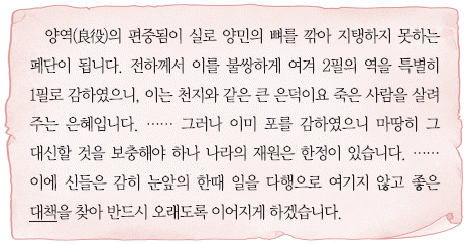
- 공인이 등장하게 된 배경을 살펴본다.
- 당백전 발행이 끼친 영향을 파악한다.
- 선무군관포를 징수한 목적을 찾아본다.
- 토산물을 쌀, 동전 등으로 납부하게 한 원인을 조사한다.
- 전세를 풍흉에 따라 9등급으로 차등 부과한 이유를 알아본다.
(정답률: 52%)
20. (가) 기구에 대한 설명으로 옳은 것은? [2점]
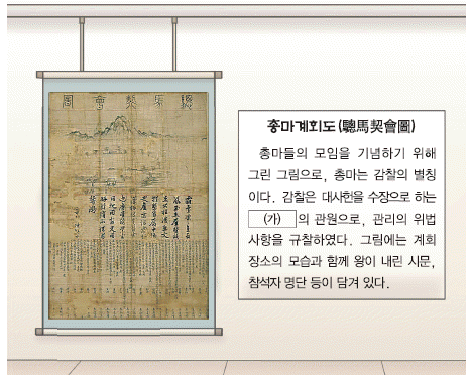
- 수도의 행정과 치안을 담당하였다.
- 왕명 출납을 맡은 왕의 비서 기관이었다.
- 왕에게 경서 등을 강론하는 경연을 주관하였다.
- 역사서를 편찬하고 사고에 보관하는 일을 맡았다.
- 5품 이하의 관리의 임명 과정에서 서경권을 행사하였다.
(정답률: 55%)
21. (가)에 들어갈 내용으로 가장 적절한 것은? [2점]
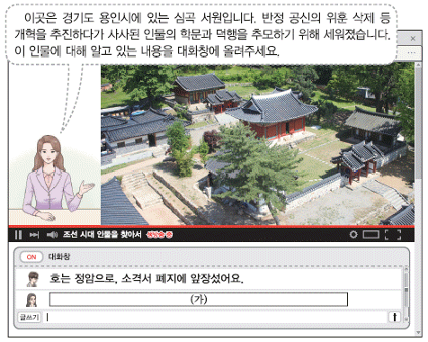
- 성학집요를 지어서 임금에서 바쳤어요.
- 김종직의 조의제문을 사초에 포함시켰어요.
- 최초의 서원인 백운동 서원을 건립하였어요.
- 소학의 보급과 현량과 실시를 주장하였어요.
- 재상 중심의 정치를 강조한 조선경국전을 저술하였어요.
(정답률: 60%)
22. 밑줄 그은 '이 왕'이 추진한 정책으로 옳은 것은? [2점]
- 6조 직계제를 처음으로 실시하였다.
- 학문 연구 기관으로 집현전을 두었다.
- 전란의 피해를 복구하고 동의보감을 간행하였다.
- 역대 문물 제도를 정리한 동국문헌비고를 편찬하였다.
- 시전 상인의 특권을 축소하는 신해통공을 단행하였다.
(정답률: 62%)
23. 밑줄 그은 '이 전쟁'의 영향으로 가장 적절한 것은? [2점]
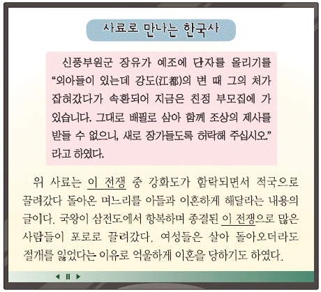
- 이완 등을 중심으로 북벌이 추진되었다.
- 김종서가 두만강 일대에 6진을 개척하였다.
- 이종무가 적의 근거지인 쓰시마섬을 정벌하였다.
- 강홍립이 이끄는 부대가 사르후 전투에 참전하였다.
- 국방 문제를 논의하기 위해 비변사가 처음으로 설치되었다.
(정답률: 59%)
24. (가) 왕의 재위 시기에 있었던 사실로 옳은 것은? [2점]
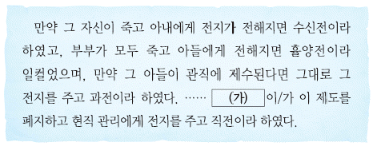
- 불교 경전을 간행하는 간경도감이 설치되었다.
- 음악 이론 등을 집대성한 악학궤범이 완성되었다.
- 세계 지도인 혼일강리역대국도지도가 제작되었다.
- 신하를 재교육하기 위한 초계문신제가 실시되었다.
- 삼남 지방의 농법을 소개한 농사직설이 편찬되었다.
(정답률: 43%)
25. (가) 지역에서 있었던 사실로 옳은 것은? [2점]
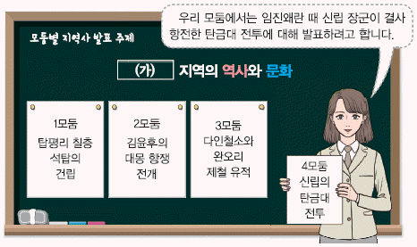
- 제1차 미소 공동 위원회가 개최되었다.
- 명 신종을 기리는 만동묘가 건립되었다.
- 강주룡이 을밀대 지붕에서 고공 농성을 벌였다.
- 고구려비가 남한 지역에서 유일하게 발견되었다.
- 박재혁이 경찰서에서 폭탄을 터트리는 의거를 일으켰다.
(정답률: 48%)
26. (가) 시기에 있었던 사실로 옳은 것은? [3점]
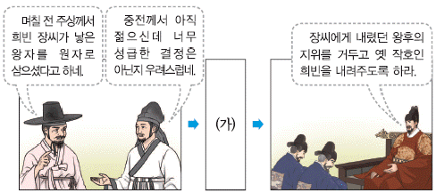
- 무신 이징옥이 반란을 일으켰다.
- 송시열이 유배된 후 사사되었다.
- 자의 대비의 복상 문제로 예송이 일어났다.
- 정여립 모반 사건을 빌미로 기축옥사가 발생하였다.
- 붕당 정치의 폐해를 막기 위해 탕평비가 건립되었다.
(정답률: 54%)
27. (가) 인물에 대한 설명으로 옳은 것은? [2점]
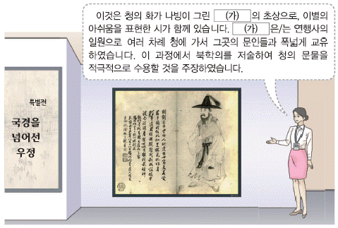
- 세계 지리서인 지구전요를 저술하였다.
- 의산문답에서 무한 우주론을 주장하였다.
- 기기도설을 참고하여 거중기를 설계하였다.
- 서자 출신으로 규장각 검서관에 기용되었다.
- 양반전을 지어 양반의 허례와 무능을 풍자하였다.
(정답률: 53%)
28. 다음 가상 대화가 이루어진 시기의 사회 모습으로 가장 적절한 것은? [1점]
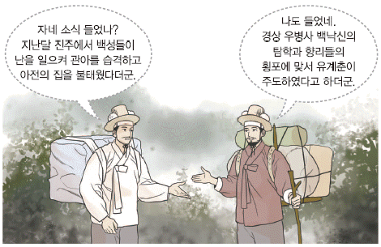
- 빈민 구제를 위해 흑창이 설치되었다.
- 원종과 애노가 사벌주에서 봉기하였다.
- 홍건적의 침입으로 개경이 함락되었다.
- 지배층을 중심으로 변발과 호복이 유행하였다.
- 안동 김씨 등의 세도 정치로 매관매직이 성행하였다.
(정답률: 65%)
29. (가) 사건에 대한 설명으로 옳은 것은? [1점]
- 운요호 사건을 빌미로 일어났다.
- 왕이 공산성으로 피란하는 계기가 되었다.
- 전개 과정에서 외규장각 도서가 약탈당하였다.
- 사태 수습을 위해 이용태가 안핵사로 파견되었다.
- 황사영이 외국 군대의 출병을 요청하는 원인이 되었다.
(정답률: 73%)
30. 다음 자료에 나타난 사건의 영향으로 가장 적절한 것은? [2점]
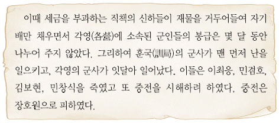
- 강화도 조약이 체결되었다.
- 김기수가 수신사로 일본에 파견되었다.
- 종로와 전국 각지에 척화비가 세워졌다.
- 일본 공사관 경비 명목으로 일본군이 주둔하였다.
- 통리기무아문을 설치하고 그 아래에 12사를 두었다.
(정답률: 64%)
31. (가)에 들어갈 내용으로 적절한 것은? [2점]
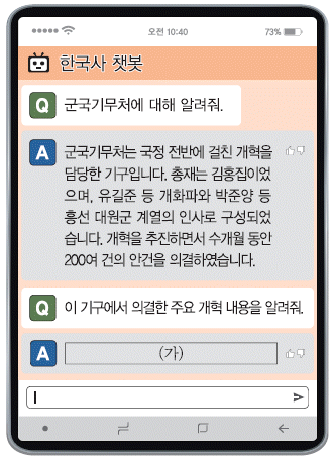
- 공사 노비법을 혁파하였습니다.
- 5군영을 2영으로 통합하였습니다.
- 건양이라는 연호를 제정하였습니다.
- 한성 사범 학교 관제를 반포하였습니다.
- 지계아문을 설치하여 지계를 발급하였습니다.
(정답률: 39%)
32. (가) 단체에 대한 설명으로 옳은 것은? [2점]
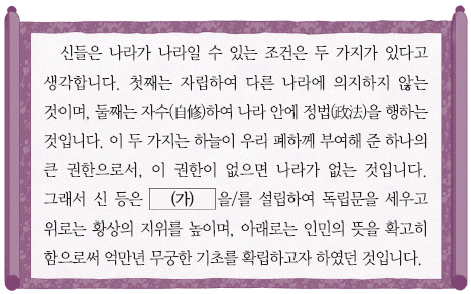
- 만세보를 발행하여 민중 계몽에 힘썼다.
- 일본의 황무지 개간권 요구를 저지하였다.
- 일제가 조작한 1⑤인 사건으로 와해되었다.
- 중추원 개편을 통해 의회 설립을 추진하였다.
- 독립운동 자금 마련을 위해 독립 공채를 발행하였다.
(정답률: 45%)
33. 다음 자료에 나타난 민족 운동에 대한 설명으로 옳은 것은? [1점]
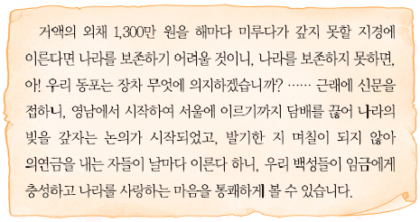
- 조선 총독부의 탄압과 방해로 실패하였다.
- 대한매일신보 등의 지원을 받아 확산되었다.
- 대한민국 임시 정부가 수립되는 계기가 되었다.
- 백정에 대한 사회적 차별 철폐를 목적으로 하였다.
- 조선 민립 대학 기성회에서 모금 활동으로 전개하였다.
(정답률: 65%)
34. 다음 대화에 나타난 사건 이후의 사실로 옳은 것은? [3점]
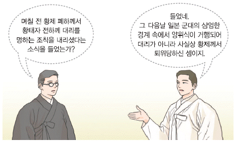
- 신식 군대인 별기군이 창설되었다.
- 묄렌도르프가 외교 고문으로 파견되었다.
- 초대 통감으로 이토 히로부미가 부임하였다.
- 기유각서가 체결되어 사법권을 박탈당하였다.
- 관민 공동회가 개최되어 헌의 6조를 결의하였다.
(정답률: 52%)
35. 밑줄 그은 '이 운동'에 대한 설명으로 옳은 것을 ＜보기＞에서 고른 것은? [2점]
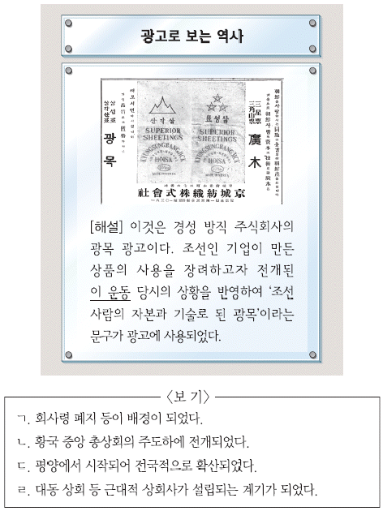
- ㄱ, ㄴ
- ㄱ, ㄷ
- ㄴ, ㄷ
- ㄴ, ㄹ
- ㄷ, ㄹ
(정답률: 44%)
36. (가) 단체에 대한 설명으로 옳은 것은? [2점]
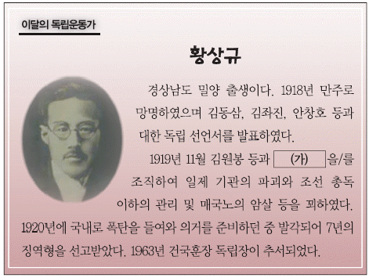
- 조선 혁명 선언을 활동 지침으로 삼았다.
- 삼균주의를 기초로 한 건국 강령을 발표하였다.
- 잡지 개벽 등을 발행하여 민족 의식을 고취하였다.
- 홍커우 공원에서 일어난 윤봉길 의거를 계획하였다.
- 조선 총독부에 국권 반환 요구서를 제출하려 하였다.
(정답률: 60%)
37. (가)~(다)를 발표된 순서대로 옳게 나열한 것은? [3점]
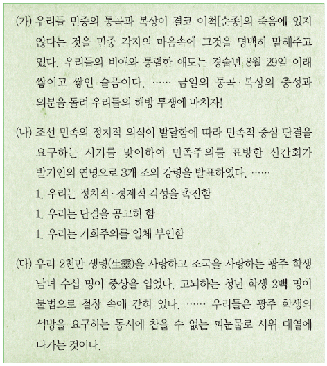
- (가)-(나)-(다)
- (가)-(다)-(나)
- (나)-(가)-(다)
- (나)-(다)-(가)
- (다)-(나)-(가)
(정답률: 44%)
38. 밑줄 그은 '시기'에 볼 수 있는 모습으로 가장 적절한 것은? [1점]
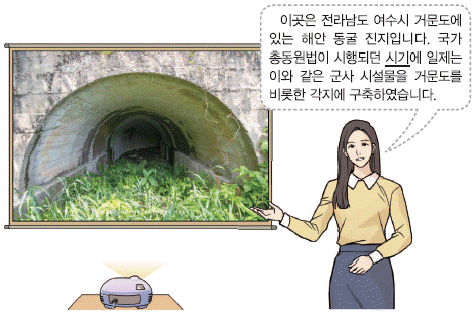
- 태형을 집행하는 헌병 경찰
- 원산 총파업에 참여하는 노동자
- 황국 신민 서사를 암송하는 학생
- 경성 제국 대학 설립을 추진하는 관리
- 서울 진공 작전에 참여하는 13도 창의군 의병
(정답률: 65%)
39. (가), (나) 법령이 발표된 사이의 시기에 있었던 사실로 옳은 것은? [3점]
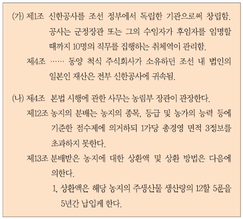
- 조선 건국 동맹이 결성되었다.
- 한미 상호 방위 조약이 체결되었다.
- 조선 사상범 예방 구금령이 공포되었다.
- 5·10 총선거로 제헌 국회가 구성되었다.
- 정부에 비판적인 경향신문이 폐간되었다.
(정답률: 35%)
40. 다음 가상 인터뷰의 주인공에 대한 설명으로 옳은 것은? [2점]
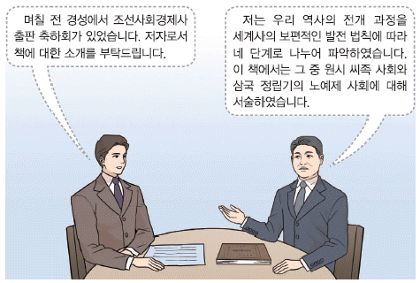
- 진단 학회를 조직하였다.
- 한국독립운동지혈사를 저술하였다.
- 식민 사학의 정체성론을 반박하였다.
- 우리말 큰 사전 편찬 사업을 추진하였다.
- 민족의 얼을 강조하고 조선학 운동을 주도하였다.
(정답률: 41%)
41. (가) 부대에 대한 설명으로 옳은 것은? [2점]
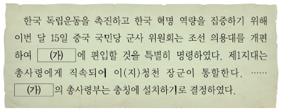
- 자유시 참변으로 세력이 약화되었다.
- 영릉가 전투에서 일본군에 승리하였다.
- 쌍성보 전투에서 한중 연합 작전을 전개하였다.
- 국내 정진군을 편성하여 국내 진공 작전을 추진하였다.
- 홍범도 부대와 연합하여 청산리에서 일본군을 격퇴하였다.
(정답률: 45%)
42. 밑줄 그은 '전쟁' 중에 있었던 사실로 옳은 것은? [1점]
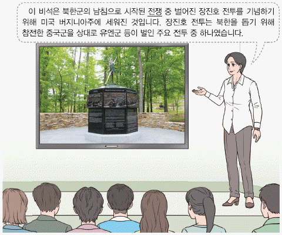
- 애치슨 라인이 발표되었다.
- 가쓰라·태프트 밀약이 체결되었다.
- 모스크바 3국 외상 회의가 개최되었다.
- 흥남에서 대규모 철수 작전이 전개되었다.
- 김구, 김규식 등이 남북 협상에 참여하였다.
(정답률: 67%)
43. 다음 성명을 발표한 정부 시기에 볼 수 있는 모습으로 적절한 것은? [2점]
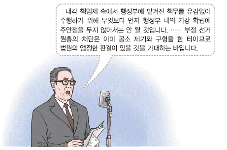
- 국민 교육 헌장을 읽고 있는 학생
- 서울 올림픽 대회에 참가하는 선수
- 개성 공단 착공식을 취재하는 기자
- 함평 고구마 피해 보상 투쟁에 참여하는 농민
- 민의원에서 통과한 법안을 심의하는 참의원 의원
(정답률: 57%)
44. 밑줄 그은 '개헌' 이후에 있었던 사실로 옳은 것은? [2점]
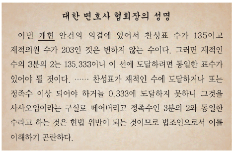
- 여수·순천 10·19 사건이 일어났다.
- 진보당의 당수였던 조봉암이 처형되었다.
- 반민족 행위 특별 조사 위원회가 설치되었다.
- 국회 프락치 사건으로 일부 국회의원이 체포되었다.
- 여운형 등의 주도로 좌우 합작 위원회가 구성되었다.
(정답률: 52%)
45. (가) 헌법이 시행된 시기의 사실로 옳은 것은? [2점]
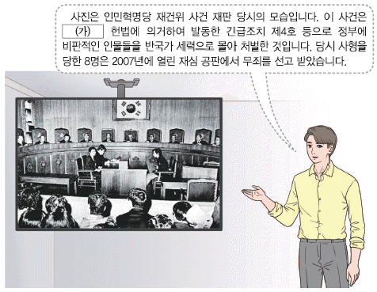
- 김주열이 최루탄을 맞고 사망하였다.
- 부천 경찰서 성 고문 사건이 발생하였다.
- 개헌 청원 백만인 서명 운동이 전개되었다.
- 국민 보도 연맹원에 대한 학살이 자행되었다.
- 민주화 시위 도중 대학생 강경대가 희생되었다.
(정답률: 35%)
46. (가) 정부 시기의 경제 상황으로 옳은 것은? [1점]
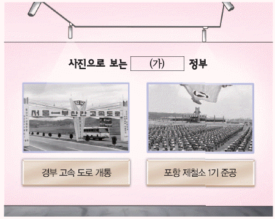
- 제3차 경제 개발 5주년 계획을 추진하였다.
- 미국과 자유 무역 협정(FTA)을 체결하였다.
- 대통령 긴급 명령으로 금융 실명제를 실시하였다.
- 국제 통화 기금(IMF)의 구제 금융 지원금을 조기 상환하였다.
- 저임금 노동자의 생활 안정을 위해 최저 임금법을 제정하였다.
(정답률: 70%)
47. 밑줄 그은 '왕'의 업적으로 옳은 것은? [2점](47번 공통지문 문제)
- 김흠돌의 난을 진압하였다.
- 병부와 상대등을 설치하였다.
- 나선 정벌에 조총 부대를 파견하였다.
- 정계와 계백료서를 지어 관리의 규범을 제시하였다.
- 쌍성총관부를 공격하여 철령 이북의 땅을 수복하였다.
(정답률: 37%)
48. (가) 민주화 운동에 대한 설명으로 옳은 것은? [1점]
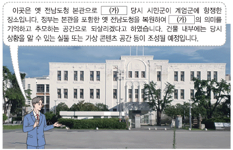
- 3·1 민주 구국 선언을 발표하였다.
- 시위 도중 대학생 이한열이 희생되었다.
- 호헌 철폐, 독재 타도 등의 구호를 외쳤다.
- 허정 과도 정부가 출범하는 계기가 되었다.
- 관련 기록물이 유네스코 세계 기록 유산으로 등재되었다.
(정답률: 52%)
49. 다음 뉴스가 보도된 정부 시기에 있었던 사실로 옳은 것은? [3점]
- 굴욕적인 대일 외교에 반대하는 6·3 시위가 일어났다.
- 북방 외교를 추진하여 사회주의 국가인 소련과 수교하였다.
- 통일 방안을 논의하기 위해 남북 조절 위원회를 설치하였다.
- 경제적 취약 계층을 위한 국민 기초 생활 보장법을 시행하였다.
- 역사 바로 세우기를 내세우며 옛 조선 총독부 건물을 철거하였다.
(정답률: 45%)
삼한 신지, 읍차, 5월 천군